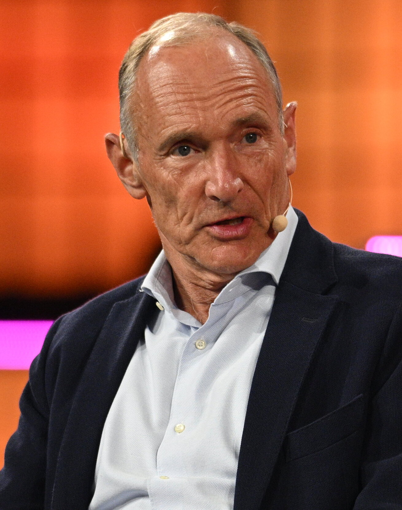
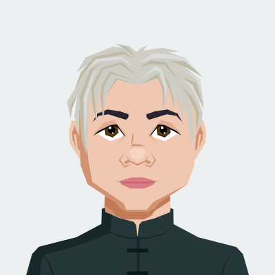

Correo electrónico de contacto:
SSG3017@gmail.com
Soy Daniel Reboredo Díaz, estudiante de 2.º de Bachillerato en Salesianos Coruña. Me considero una persona responsable, organizada y comprometida con mis objetivos. Tengo ganas de seguir aprendiendo, adquirir nuevas experiencias y desarrollar mis habilidades tanto a nivel personal como profesional. Destaco por mi capacidad de resiliencia, mi disposición para trabajar en equipo y mi interés por afrontar nuevos retos.

